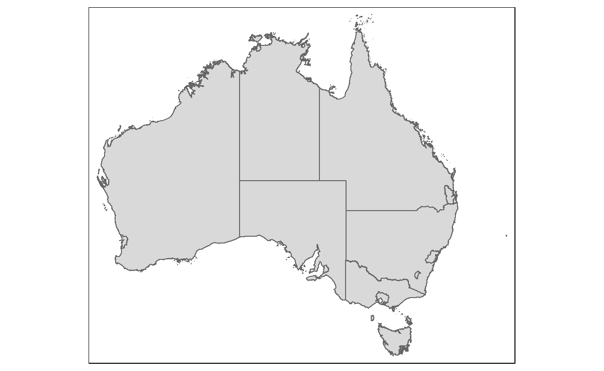
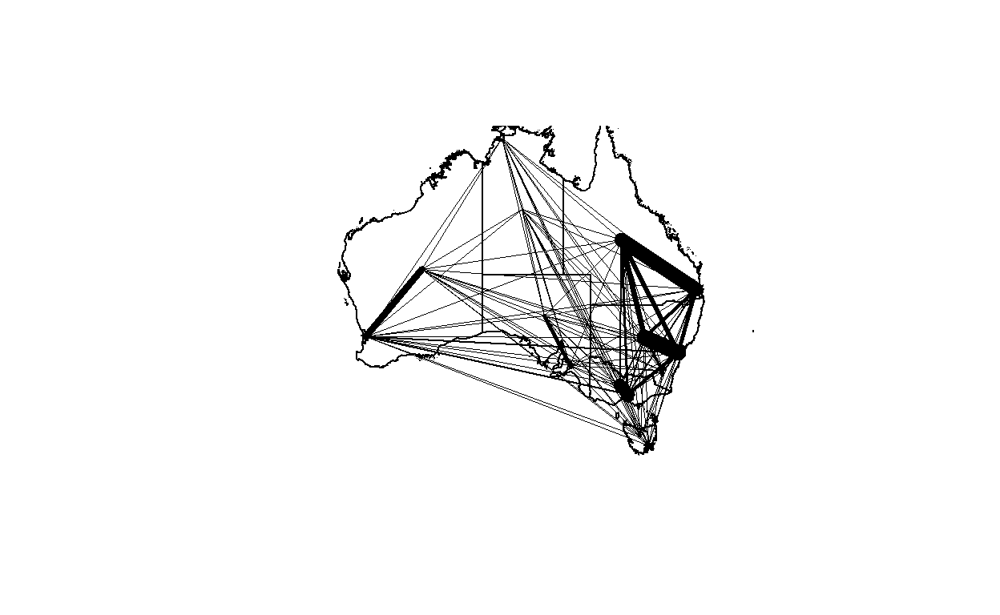
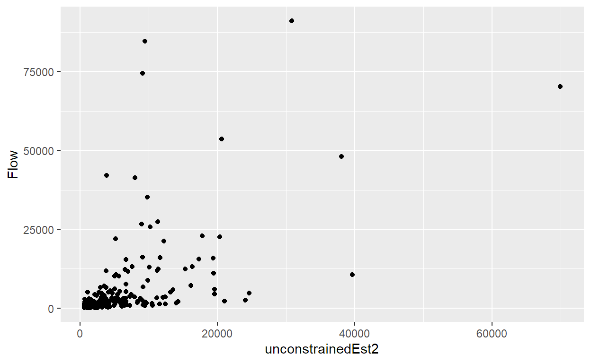

Calibrating Spatial Interaction Models using Generalised Linear Models (GLM)
Spatial interaction or “gravity models” estimate the flow of people, material, or information between locations in geographical space.
library(devtools)
install_version("stplanr", version = "0.8.4", repos = "http://cran.us.r-project.org")
# download a copy of Austrilia Greater Capital City Statistical Areas(geojson) boundary layer from a dropbox depository
Aus <- geojson_read("https://www.dropbox.com/s/0fg80nzcxcsybii/GCCSA_2016_AUST_New.geojson?raw=1", what = "sp")
Ausdata <- Aus@data
AusSF <- st_as_sf(Aus) %>%
st_set_crs(4283)
st_is_valid(AusSF)
[1] TRUE FALSE TRUE TRUE TRUE TRUE TRUE TRUE TRUE TRUE TRUE
[12] FALSE TRUE TRUE TRUEAusSF <- st_make_valid(AusSF)
st_is_valid(AusSF)
[1] TRUE TRUE TRUE TRUE TRUE TRUE TRUE TRUE TRUE TRUE TRUE TRUE TRUE
[14] TRUE TRUEtmap_mode("plot")
qtm(AusSF)

head(AusSF, 10)
Simple feature collection with 10 features and 6 fields
Geometry type: MULTIPOLYGON
Dimension: XY
Bounding box: xmin: 112.9211 ymin: -39.15919 xmax: 159.1092 ymax: -9.142176
Geodetic CRS: GDA94
GCCSA_CODE GCC_CODE16 GCCSA_NAME STATE_CODE
1 1RNSW 1RNSW Rest of NSW 1
2 1GSYD 1GSYD Greater Sydney 1
3 2GMEL 2GMEL Greater Melbourne 2
4 2RVIC 2RVIC Rest of Vic. 2
5 3RQLD 3RQLD Rest of Qld 3
6 3GBRI 3GBRI Greater Brisbane 3
7 4RSAU 4RSAU Rest of SA 4
8 4GADE 4GADE Greater Adelaide 4
9 5GPER 5GPER Greater Perth 5
10 5RWAU 5RWAU Rest of WA 5
STATE_NAME AREA_SQKM geometry
1 New South Wales 788442.589 MULTIPOLYGON (((159.061 -31...
2 New South Wales 12368.193 MULTIPOLYGON (((151.2652 -3...
3 Victoria 9992.512 MULTIPOLYGON (((144.9063 -3...
4 Victoria 217503.119 MULTIPOLYGON (((146.6857 -3...
5 Queensland 1714330.123 MULTIPOLYGON (((150.7374 -2...
6 Queensland 15841.960 MULTIPOLYGON (((153.374 -27...
7 South Australia 981015.072 MULTIPOLYGON (((136.1839 -3...
8 South Australia 3259.836 MULTIPOLYGON (((138.5262 -3...
9 Western Australia 6416.222 MULTIPOLYGON (((115.7128 -3...
10 Western Australia 2520230.017 MULTIPOLYGON (((117.8946 -3...Simple feature collection with 10 features and 6 fields
Geometry type: MULTIPOLYGON
Dimension: XY
Bounding box: xmin: 112.9211 ymin: -39.15919 xmax: 159.1092 ymax: -9.142176
Geodetic CRS: GDA94
GCCSA_CODE GCC_CODE16 GCCSA_NAME STATE_CODE
2 1GSYD 1GSYD Greater Sydney 1
1 1RNSW 1RNSW Rest of NSW 1
3 2GMEL 2GMEL Greater Melbourne 2
4 2RVIC 2RVIC Rest of Vic. 2
6 3GBRI 3GBRI Greater Brisbane 3
5 3RQLD 3RQLD Rest of Qld 3
8 4GADE 4GADE Greater Adelaide 4
7 4RSAU 4RSAU Rest of SA 4
9 5GPER 5GPER Greater Perth 5
10 5RWAU 5RWAU Rest of WA 5
STATE_NAME AREA_SQKM geometry
2 New South Wales 12368.193 MULTIPOLYGON (((151.2652 -3...
1 New South Wales 788442.589 MULTIPOLYGON (((159.061 -31...
3 Victoria 9992.512 MULTIPOLYGON (((144.9063 -3...
4 Victoria 217503.119 MULTIPOLYGON (((146.6857 -3...
6 Queensland 15841.960 MULTIPOLYGON (((153.374 -27...
5 Queensland 1714330.123 MULTIPOLYGON (((150.7374 -2...
8 South Australia 3259.836 MULTIPOLYGON (((138.5262 -3...
7 South Australia 981015.072 MULTIPOLYGON (((136.1839 -3...
9 Western Australia 6416.222 MULTIPOLYGON (((115.7128 -3...
10 Western Australia 2520230.017 MULTIPOLYGON (((117.8946 -3...Aus <- as(AusSF1, "Spatial")
# Migration data from 2011 Australia Census. It is in csv file format.
mdata <- read_csv("https://www.dropbox.com/s/wi3zxlq5pff1yda/AusMig2011.csv?raw=1",col_names = TRUE)
glimpse(mdata)
Rows: 225
Columns: 13
$ Origin <chr> "Greater Sydney", "Greater Sydney", "Greater~
$ Orig_code <chr> "1GSYD", "1GSYD", "1GSYD", "1GSYD", "1GSYD",~
$ Destination <chr> "Greater Sydney", "Rest of NSW", "Greater Me~
$ Dest_code <chr> "1GSYD", "1RNSW", "2GMEL", "2RVIC", "3GBRI",~
$ Flow <dbl> 3395015, 91031, 22601, 4416, 22888, 27445, 5~
$ vi1_origpop <dbl> 4391673, 4391673, 4391673, 4391673, 4391673,~
$ wj1_destpop <dbl> 4391673, 2512952, 3999981, 1345717, 2065998,~
$ vi2_origunemp <dbl> 5.74, 5.74, 5.74, 5.74, 5.74, 5.74, 5.74, 5.~
$ wj2_destunemp <dbl> 5.74, 6.12, 5.47, 5.17, 5.86, 6.22, 5.78, 5.~
$ vi3_origmedinc <dbl> 780.64, 780.64, 780.64, 780.64, 780.64, 780.~
$ wj3_destmedinc <dbl> 780.64, 509.97, 407.95, 506.58, 767.08, 446.~
$ vi4_origpctrent <dbl> 31.77, 31.77, 31.77, 31.77, 31.77, 31.77, 31~
$ wj4_destpctrent <dbl> 31.77, 27.20, 27.34, 24.08, 33.19, 32.57, 28~AusProj <- spTransform(Aus,"+init=epsg:3112")
summary(AusProj)
Object of class SpatialPolygonsDataFrame
Coordinates:
min max
x -2083066 2346598
y -4973093 -1115948
Is projected: TRUE
proj4string :
[+proj=lcc +lat_0=0 +lon_0=134 +lat_1=-18 +lat_2=-36 +x_0=0
+y_0=0 +ellps=GRS80 +units=m +no_defs]
Data attributes:
GCCSA_CODE GCC_CODE16 GCCSA_NAME
Length:15 Length:15 Length:15
Class :character Class :character Class :character
Mode :character Mode :character Mode :character
STATE_CODE STATE_NAME AREA_SQKM
Length:15 Length:15 Min. : 1695
Class :character Class :character 1st Qu.: 4838
Mode :character Mode :character Median : 15842
Mean : 512525
3rd Qu.: 884729
Max. :2520230 dist <- spDists(AusProj)
dist
[,1] [,2] [,3] [,4] [,5] [,6]
[1,] 0.0 391437.9 682745.0 685848.4 707908.1 1386485.4
[2,] 391437.9 0.0 644760.8 571477.3 750755.8 1100378.3
[3,] 682745.0 644760.8 0.0 133469.9 1337408.0 1694648.9
[4,] 685848.4 571477.3 133469.9 0.0 1296766.5 1584991.5
[5,] 707908.1 750755.8 1337408.0 1296766.5 0.0 998492.1
[6,] 1386485.4 1100378.3 1694648.9 1584991.5 998492.1 0.0
[7,] 1112315.7 819629.7 657875.7 541576.5 1550134.5 1477964.9
[8,] 1462171.3 1082754.7 1212525.3 1081939.7 1655212.1 1192252.9
[9,] 3226086.3 2891531.5 2722337.4 2633416.1 3531418.0 2962834.0
[10,] 2870995.7 2490287.4 2542772.5 2424001.8 2993729.9 2239419.3
[11,] 1064848.2 1192833.0 603165.2 731624.1 1772756.1 2280386.7
[12,] 999758.0 1096764.5 489273.6 615173.0 1705581.2 2176139.6
[13,] 3062979.3 2699307.7 3113837.0 2981210.5 2780660.8 1782227.9
[14,] 2323414.2 1945803.1 2323404.3 2190310.9 2143514.5 1183495.9
[15,] 256289.3 412697.8 430815.8 452584.3 948547.6 1505884.6
[,7] [,8] [,9] [,10] [,11] [,12]
[1,] 1112315.7 1462171.3 3226086.3 2870995.7 1064848.2 999758.0
[2,] 819629.7 1082754.7 2891531.5 2490287.4 1192833.0 1096764.5
[3,] 657875.7 1212525.3 2722337.4 2542772.5 603165.2 489273.6
[4,] 541576.5 1081939.7 2633416.1 2424001.8 731624.1 615173.0
[5,] 1550134.5 1655212.1 3531418.0 2993729.9 1772756.1 1705581.2
[6,] 1477964.9 1192252.9 2962834.0 2239419.3 2280386.7 2176139.6
[7,] 0.0 602441.7 2120117.7 1884897.3 1170300.0 1049301.5
[8,] 602441.7 0.0 1879873.6 1408864.5 1765685.0 1644255.7
[9,] 2120117.7 1879873.6 0.0 963094.8 3030825.1 2933427.1
[10,] 1884897.3 1408864.5 963094.8 0.0 3007005.8 2891500.6
[11,] 1170300.0 1765685.0 3030825.1 3007005.8 0.0 121449.6
[12,] 1049301.5 1644255.7 2933427.1 2891500.6 121449.6 0.0
[13,] 2584759.7 1991775.4 2648782.4 1686414.7 3707567.5 3587636.5
[14,] 1788551.3 1198930.8 2215369.4 1302498.1 2913873.5 2793570.5
[15,] 936272.3 1368380.0 3055551.0 2766083.4 835822.4 759587.0
[,13] [,14] [,15]
[1,] 3062979 2323414 256289.3
[2,] 2699308 1945803 412697.8
[3,] 3113837 2323404 430815.8
[4,] 2981211 2190311 452584.3
[5,] 2780661 2143514 948547.6
[6,] 1782228 1183496 1505884.6
[7,] 2584760 1788551 936272.3
[8,] 1991775 1198931 1368380.0
[9,] 2648782 2215369 3055551.0
[10,] 1686415 1302498 2766083.4
[11,] 3707567 2913873 835822.4
[12,] 3587637 2793570 759587.0
[13,] 0 796710 3101576.8
[14,] 796710 0 2337203.6
[15,] 3101577 2337204 0.0distPair <- melt(dist)
head(distPair, 10)
Var1 Var2 value
1 1 1 0.0
2 2 1 391437.9
3 3 1 682745.0
4 4 1 685848.4
5 5 1 707908.1
6 6 1 1386485.4
7 7 1 1112315.7
8 8 1 1462171.3
9 9 1 3226086.3
10 10 1 2870995.7distPair$value <- distPair$value / 1000
head(distPair, 10)
Var1 Var2 value
1 1 1 0.0000
2 2 1 391.4379
3 3 1 682.7450
4 4 1 685.8484
5 5 1 707.9081
6 6 1 1386.4854
7 7 1 1112.3157
8 8 1 1462.1713
9 9 1 3226.0863
10 10 1 2870.9957# First create a new total column which excludes intra-zone flow totals. We will sets them to a very very small number to avoid making the intra-zonal distance become 0.
mdata$FlowNoIntra <- ifelse(mdata$Orig_code == mdata$Dest_code,0,mdata$Flow)
mdata$offset <- ifelse(mdata$Orig_code == mdata$Dest_code,0.0000000001,1)
# Next, we ordered our spatial data earlier so that our zones are in their code order. We can now easily join these data together with our flow data as they are in the correct order.
mdata$dist <- distPair$value
# and while we are here, rather than setting the intra-zonal distances to 0, we should set them to something small (most intrazonal moves won’t occur over 0 distance)mdata$dist <- ifelse(mdata$dist == 0,5,mdata$dist)
#peek into data
glimpse(mdata)
Rows: 225
Columns: 16
$ Origin <chr> "Greater Sydney", "Greater Sydney", "Greater~
$ Orig_code <chr> "1GSYD", "1GSYD", "1GSYD", "1GSYD", "1GSYD",~
$ Destination <chr> "Greater Sydney", "Rest of NSW", "Greater Me~
$ Dest_code <chr> "1GSYD", "1RNSW", "2GMEL", "2RVIC", "3GBRI",~
$ Flow <dbl> 3395015, 91031, 22601, 4416, 22888, 27445, 5~
$ vi1_origpop <dbl> 4391673, 4391673, 4391673, 4391673, 4391673,~
$ wj1_destpop <dbl> 4391673, 2512952, 3999981, 1345717, 2065998,~
$ vi2_origunemp <dbl> 5.74, 5.74, 5.74, 5.74, 5.74, 5.74, 5.74, 5.~
$ wj2_destunemp <dbl> 5.74, 6.12, 5.47, 5.17, 5.86, 6.22, 5.78, 5.~
$ vi3_origmedinc <dbl> 780.64, 780.64, 780.64, 780.64, 780.64, 780.~
$ wj3_destmedinc <dbl> 780.64, 509.97, 407.95, 506.58, 767.08, 446.~
$ vi4_origpctrent <dbl> 31.77, 31.77, 31.77, 31.77, 31.77, 31.77, 31~
$ wj4_destpctrent <dbl> 31.77, 27.20, 27.34, 24.08, 33.19, 32.57, 28~
$ FlowNoIntra <dbl> 0, 91031, 22601, 4416, 22888, 27445, 5817, 7~
$ offset <dbl> 1e-10, 1e+00, 1e+00, 1e+00, 1e+00, 1e+00, 1e~
$ dist <dbl> 5.0000, 391.4379, 682.7450, 685.8484, 707.90~mdatasub <- mdata[mdata$Orig_code!=mdata$Dest_code,]
# First, use the od2line() function stplanr package to remove all(intra-zonal flows) but the origin, destination and flow columns.
mdatasub_skinny <- mdatasub[,c(2,4,5)]
travel_network <- od2line(flow = mdatasub_skinny,
zones = Aus)
# Next, convert the flows to WGS84 projection.
travel_networkwgs <- spTransform(travel_network,"+init=epsg:4326" )
AusWGS <- spTransform(Aus,"+init=epsg:4326" )
# Lastly, we will set the line widths to some sensible value according to the flow.
w <- mdatasub_skinny$Flow / max(mdatasub_skinny$Flow) * 10
# plot the desire line map
plot(travel_networkwgs, lwd = w)
plot(AusWGS, add=T)

uncosim <- glm(Flow ~ log(vi1_origpop)+log(wj3_destmedinc)+log(dist), na.action = na.exclude, family = poisson(link = "log"), data = mdatasub)
summary(uncosim)
Call:
glm(formula = Flow ~ log(vi1_origpop) + log(wj3_destmedinc) +
log(dist), family = poisson(link = "log"), data = mdatasub,
na.action = na.exclude)
Deviance Residuals:
Min 1Q Median 3Q Max
-177.78 -54.49 -24.50 9.21 470.11
Coefficients:
Estimate Std. Error z value Pr(>|z|)
(Intercept) 7.1953790 0.0248852 289.14 <2e-16 ***
log(vi1_origpop) 0.5903363 0.0009232 639.42 <2e-16 ***
log(wj3_destmedinc) -0.1671417 0.0033663 -49.65 <2e-16 ***
log(dist) -0.8119316 0.0010157 -799.41 <2e-16 ***
---
Signif. codes: 0 '***' 0.001 '**' 0.01 '*' 0.05 '.' 0.1 ' ' 1
(Dispersion parameter for poisson family taken to be 1)
Null deviance: 2750417 on 209 degrees of freedom
Residual deviance: 1503573 on 206 degrees of freedom
AIC: 1505580
Number of Fisher Scoring iterations: 5# Another way to calculate the estimates is to plug all of the parameters back into Equation 6 like this:
#First, assign the parameter values from the model to the appropriate variables
k <- uncosim$coefficients[1]
mu <- uncosim$coefficients[2]
alpha <- uncosim$coefficients[3]
beta <- -uncosim$coefficients[4]
#Next, plug everything back into the Equation 6 model… (be careful with the positive and negative signing of the parameters as the beta parameter may not have been saved as negative so will need to force negative)mdatasub$unconstrainedEst2 <- exp(k+(mu*log(mdatasub$vi1_origpop))+(alpha*log(mdatasub$wj3_destmedinc))-(beta*log(mdatasub$dist)))
# mdatasub$unconstrainedEst2 <- (exp(k)*exp(mu*log(mdatasub$vi1_origpop))*exp(alpha*log(mdatasub$wj3_destmedinc))*exp(-beta*log(mdatasub$dist)))
# Now, we will run the model and save all of the new flow estimates in a new column in the dataframe.
mdatasub$unconstrainedEst2 <- round(mdatasub$unconstrainedEst2,0)
sum(mdatasub$unconstrainedEst2)
[1] 1313517# turn the output into a little matrix
mdatasubmat2 <- dcast(mdatasub, Orig_code ~ Dest_code, sum, value.var = "unconstrainedEst2", margins=c("Orig_code", "Dest_code"))
mdatasubmat2
Orig_code 1GSYD 1RNSW 2GMEL 2RVIC 3GBRI 3RQLD 4GADE 4RSAU 5GPER
1 1GSYD 0 30810 20358 19562 17788 11282 13497 10525 5234
2 1RNSW 20638 0 15339 16316 12198 9789 12439 9661 4114
3 2GMEL 17285 19443 0 69923 10043 9071 19565 11595 5685
4 2RVIC 9053 11272 38111 0 5413 5035 12044 6686 3070
5 3GBRI 11364 11634 7556 7473 0 9436 6605 6097 3116
6 3RQLD 6931 8978 6563 6683 9074 0 7227 8378 3783
7 4GADE 5784 7958 9875 11153 4431 5042 0 10176 3464
8 4RSAU 2278 3122 2956 3127 2066 2952 5140 0 1878
9 5GPER 2986 3504 3820 3784 2782 3512 4611 4950 0
10 5RWAU 1583 1908 1947 1952 1534 2126 2446 3017 3885
11 6GHOB 2125 2081 3758 3099 1409 1257 2162 1507 919
12 6RTAS 2653 2642 5282 4230 1724 1549 2801 1894 1119
13 7GDAR 647 769 711 710 701 1102 815 981 736
14 7RNTE 678 841 756 765 726 1287 921 1241 713
15 8ACTE 9191 6703 6720 6227 3186 2396 3526 2523 1242
16 (all) 93196 111665 123752 155004 73075 65836 93799 79231 38958
5RWAU 6GHOB 6RTAS 7GDAR 7RNTE 8ACTE (all)
1 5718 13997 14251 5270 7226 39656 215174
2 4616 9181 9507 4200 6002 19373 153373
3 5972 21014 24091 4921 6838 24616 250062
4 3264 9444 10515 2680 3771 12432 132790
5 3541 5929 5918 3652 4943 8781 96045
6 4719 5087 5111 5517 8428 6351 92830
7 3787 6102 6449 2847 4206 6519 87793
8 2359 2149 2202 1730 2862 2356 37177
9 8006 3453 3430 3420 4332 3058 55648
10 0 1676 1673 2380 3215 1599 30941
11 919 0 13173 753 1004 2535 36701
12 1125 16150 0 918 1232 3249 46568
13 1055 609 605 0 2063 627 12131
14 1090 620 621 1578 0 661 12498
15 1339 3870 4045 1185 1633 0 53786
16 47510 99281 101591 41051 57755 131813 1313517#compare with the original matrix
mdatasubmat <- dcast(mdatasub, Orig_code ~ Dest_code, sum, value.var = "Flow", margins=c("Orig_code", "Dest_code"))
mdatasubmat
Orig_code 1GSYD 1RNSW 2GMEL 2RVIC 3GBRI 3RQLD 4GADE 4RSAU
1 1GSYD 0 91031 22601 4416 22888 27445 5817 795
2 1RNSW 53562 0 12407 13084 21300 35189 3617 1591
3 2GMEL 15560 11095 0 70260 13057 16156 6021 1300
4 2RVIC 2527 11967 48004 0 4333 10102 3461 2212
5 3GBRI 12343 16061 13078 4247 0 84649 3052 820
6 3RQLD 11634 26701 12284 7573 74410 0 3774 1751
7 4GADE 5421 3518 8810 3186 5447 6173 0 25677
8 4RSAU 477 1491 1149 2441 820 2633 22015 0
9 5GPER 6516 4066 11729 2929 5081 7006 2631 867
10 5RWAU 714 2242 1490 1813 1137 4328 807 982
11 6GHOB 1224 1000 3016 622 1307 1804 533 106
12 6RTAS 1024 1866 2639 1636 1543 2883 651 342
13 7GDAR 1238 2178 1953 1480 2769 5108 2105 641
14 7RNTE 406 1432 700 792 896 3018 1296 961
15 8ACTE 6662 15399 5229 1204 4331 3954 1359 134
16 (all) 119308 190047 145089 115683 159319 210448 57139 38179
5GPER 5RWAU 6GHOB 6RTAS 7GDAR 7RNTE 8ACTE (all)
1 10574 2128 1644 1996 1985 832 10670 204822
2 4990 3300 970 1882 2248 1439 15779 171358
3 10116 2574 2135 2555 2023 996 4724 158572
4 3459 2601 672 1424 1547 717 1353 94379
5 4812 1798 1386 2306 1812 909 3134 150407
6 6588 4690 1499 3089 3127 2140 3115 162375
7 3829 1228 602 872 1851 921 1993 69528
8 1052 1350 142 430 681 488 183 35352
9 0 41320 1018 1805 1300 413 1666 88347
10 42146 0 277 1163 1090 623 256 59068
11 899 363 0 5025 190 115 565 16769
12 1210 1032 7215 0 268 170 292 22771
13 2152 954 243 335 0 1996 832 23984
14 699 826 96 213 2684 0 229 14248
15 1514 285 369 270 617 211 0 41538
16 94040 64449 18268 23365 21423 11970 44791 1313518# visualise the actual flow and estimated flow by scatter plot technique.
ggplot(data=mdatasub,
aes(y = `Flow`,
x = `unconstrainedEst2`))+
geom_point(color="black", fill="light blue")

# Goodness-o-Fit statistics
postResample(mdatasub$Flow,mdatasub$unconstrainedEst2)
RMSE Rsquared MAE
1.078917e+04 3.245418e-01 5.054548e+03 origSim <- glm(Flow ~ Orig_code+log(wj3_destmedinc)+log(dist)-1, na.action = na.exclude, family = poisson(link = "log"), data = mdatasub) #the “-1” indicates no intercept in the regression modelNAsummary(origSim)
Call:
glm(formula = Flow ~ Orig_code + log(wj3_destmedinc) + log(dist) -
1, family = poisson(link = "log"), data = mdatasub, na.action = na.exclude)
Deviance Residuals:
Min 1Q Median 3Q Max
-225.71 -54.10 -15.94 20.45 374.27
Coefficients:
Estimate Std. Error z value Pr(>|z|)
Orig_code1GSYD 19.541851 0.023767 822.22 <2e-16 ***
Orig_code1RNSW 19.425497 0.023913 812.35 <2e-16 ***
Orig_code2GMEL 18.875763 0.023243 812.12 <2e-16 ***
Orig_code2RVIC 18.335242 0.022996 797.31 <2e-16 ***
Orig_code3GBRI 19.856564 0.024063 825.20 <2e-16 ***
Orig_code3RQLD 20.094898 0.024300 826.94 <2e-16 ***
Orig_code4GADE 18.747938 0.023966 782.28 <2e-16 ***
Orig_code4RSAU 18.324029 0.024407 750.75 <2e-16 ***
Orig_code5GPER 20.010551 0.024631 812.43 <2e-16 ***
Orig_code5RWAU 19.392751 0.024611 787.96 <2e-16 ***
Orig_code6GHOB 16.802016 0.024282 691.97 <2e-16 ***
Orig_code6RTAS 17.013981 0.023587 721.33 <2e-16 ***
Orig_code7GDAR 18.607483 0.025012 743.93 <2e-16 ***
Orig_code7RNTE 17.798856 0.025704 692.45 <2e-16 ***
Orig_code8ACTE 17.796693 0.023895 744.79 <2e-16 ***
log(wj3_destmedinc) -0.272640 0.003383 -80.59 <2e-16 ***
log(dist) -1.227679 0.001400 -876.71 <2e-16 ***
---
Signif. codes: 0 '***' 0.001 '**' 0.01 '*' 0.05 '.' 0.1 ' ' 1
(Dispersion parameter for poisson family taken to be 1)
Null deviance: 23087017 on 210 degrees of freedom
Residual deviance: 1207394 on 193 degrees of freedom
AIC: 1209427
Number of Fisher Scoring iterations: 6# Fit the model
mdatasub$origSimFitted <- round(fitted(origSim),0)
# turn the output into matrix
mdatasubmat3 <- dcast(mdatasub, Orig_code ~ Dest_code, sum, value.var = "origSimFitted", margins=c("Orig_code", "Dest_code"))
mdatasubmat3
Orig_code 1GSYD 1RNSW 2GMEL 2RVIC 3GBRI 3RQLD 4GADE 4RSAU
1 1GSYD 0 36794 19752 18516 15905 8076 10591 7248
2 1RNSW 29163 0 18862 20620 13173 9548 13715 9329
3 2GMEL 8501 10243 0 70950 3742 3243 10367 4685
4 2RVIC 4924 6918 43838 0 2263 2050 7667 3139
5 3GBRI 21684 22658 11852 11604 0 16555 9653 8526
6 3RQLD 12057 17984 11248 11511 18128 0 12989 16188
7 4GADE 4109 6714 9345 11186 2747 3376 0 9731
8 4RSAU 1922 3122 2887 3130 1659 2876 6653 0
9 5GPER 3930 5048 5777 5673 3533 5080 7666 8507
10 5RWAU 2445 3269 3387 3386 2333 3862 4775 6535
11 6GHOB 619 605 1485 1105 333 283 643 371
12 6RTAS 827 829 2374 1689 431 371 908 501
13 7GDAR 1030 1350 1204 1198 1165 2331 1478 1948
14 7RNTE 644 899 769 779 714 1716 1034 1618
15 8ACTE 9622 6021 6070 5386 1939 1274 2285 1373
16 (all) 101477 122454 138850 166733 68065 60641 90424 79699
5GPER 5RWAU 6GHOB 6RTAS 7GDAR 7RNTE 8ACTE (all)
1 2504 2860 11192 11454 2519 4105 53308 204824
2 2549 3032 8667 9100 2619 4543 26439 171359
3 1584 1705 11552 14147 1268 2109 14474 158570
4 961 1053 5309 6221 779 1320 7935 94377
5 3069 3722 8200 8144 3886 6207 14647 150407
6 4832 6746 7639 7664 8515 16335 10539 162375
7 1895 2167 4506 4879 1403 2558 4912 69528
8 1438 2028 1780 1840 1264 2736 2017 35352
9 0 17470 4952 4882 4812 6954 4064 88348
10 9514 0 2696 2679 4515 7196 2476 59068
11 175 175 0 9840 129 201 807 16771
12 225 226 12842 0 166 261 1121 22771
13 1253 2159 950 937 0 6000 981 23984
14 695 1321 569 568 2303 0 618 14247
15 467 523 2631 2802 433 712 0 41538
16 31161 45187 83485 85157 34611 61237 144338 1313519#compare with the original observed data as shown below.
mdatasubmat
Orig_code 1GSYD 1RNSW 2GMEL 2RVIC 3GBRI 3RQLD 4GADE 4RSAU
1 1GSYD 0 91031 22601 4416 22888 27445 5817 795
2 1RNSW 53562 0 12407 13084 21300 35189 3617 1591
3 2GMEL 15560 11095 0 70260 13057 16156 6021 1300
4 2RVIC 2527 11967 48004 0 4333 10102 3461 2212
5 3GBRI 12343 16061 13078 4247 0 84649 3052 820
6 3RQLD 11634 26701 12284 7573 74410 0 3774 1751
7 4GADE 5421 3518 8810 3186 5447 6173 0 25677
8 4RSAU 477 1491 1149 2441 820 2633 22015 0
9 5GPER 6516 4066 11729 2929 5081 7006 2631 867
10 5RWAU 714 2242 1490 1813 1137 4328 807 982
11 6GHOB 1224 1000 3016 622 1307 1804 533 106
12 6RTAS 1024 1866 2639 1636 1543 2883 651 342
13 7GDAR 1238 2178 1953 1480 2769 5108 2105 641
14 7RNTE 406 1432 700 792 896 3018 1296 961
15 8ACTE 6662 15399 5229 1204 4331 3954 1359 134
16 (all) 119308 190047 145089 115683 159319 210448 57139 38179
5GPER 5RWAU 6GHOB 6RTAS 7GDAR 7RNTE 8ACTE (all)
1 10574 2128 1644 1996 1985 832 10670 204822
2 4990 3300 970 1882 2248 1439 15779 171358
3 10116 2574 2135 2555 2023 996 4724 158572
4 3459 2601 672 1424 1547 717 1353 94379
5 4812 1798 1386 2306 1812 909 3134 150407
6 6588 4690 1499 3089 3127 2140 3115 162375
7 3829 1228 602 872 1851 921 1993 69528
8 1052 1350 142 430 681 488 183 35352
9 0 41320 1018 1805 1300 413 1666 88347
10 42146 0 277 1163 1090 623 256 59068
11 899 363 0 5025 190 115 565 16769
12 1210 1032 7215 0 268 170 292 22771
13 2152 954 243 335 0 1996 832 23984
14 699 826 96 213 2684 0 229 14248
15 1514 285 369 270 617 211 0 41538
16 94040 64449 18268 23365 21423 11970 44791 1313518# display the actual flow and estimated flow by using the scatter plot technique.
ggplot(data=mdatasub,
aes(y = `Flow`,
x = `origSimFitted`))+
geom_point(color="black", fill="light blue")
# compare the fitted values and the actual values by computing Goodness-of-fit statistics.
postResample(mdatasub$Flow,mdatasub$origSimFitted)
RMSE Rsquared MAE
9872.6934321 0.4345011 4804.6714286 destSim <- glm(Flow ~ Dest_code+log(vi1_origpop)+log(dist)-1, na.action = na.exclude, family = poisson(link = "log"), data = mdatasub) #the “-1” indicates no intercept in the regression modelNAsummary(destSim)
Call:
glm(formula = Flow ~ Dest_code + log(vi1_origpop) + log(dist) -
1, family = poisson(link = "log"), data = mdatasub, na.action = na.exclude)
Deviance Residuals:
Min 1Q Median 3Q Max
-138.69 -33.38 -10.47 11.72 293.39
Coefficients:
Estimate Std. Error z value Pr(>|z|)
Dest_code1GSYD 8.8262922 0.0176638 499.7 <2e-16 ***
Dest_code1RNSW 9.1809447 0.0178316 514.9 <2e-16 ***
Dest_code2GMEL 8.6716196 0.0170155 509.6 <2e-16 ***
Dest_code2RVIC 8.0861927 0.0173840 465.1 <2e-16 ***
Dest_code3GBRI 9.5462594 0.0183631 519.9 <2e-16 ***
Dest_code3RQLD 10.1295722 0.0184672 548.5 <2e-16 ***
Dest_code4GADE 8.3051406 0.0184018 451.3 <2e-16 ***
Dest_code4RSAU 8.1438651 0.0188772 431.4 <2e-16 ***
Dest_code5GPER 9.9664486 0.0190008 524.5 <2e-16 ***
Dest_code5RWAU 9.3061908 0.0190006 489.8 <2e-16 ***
Dest_code6GHOB 6.9737562 0.0186288 374.4 <2e-16 ***
Dest_code6RTAS 7.1546249 0.0183673 389.5 <2e-16 ***
Dest_code7GDAR 8.3972440 0.0199735 420.4 <2e-16 ***
Dest_code7RNTE 7.4521232 0.0206128 361.5 <2e-16 ***
Dest_code8ACTE 7.3585270 0.0181823 404.7 <2e-16 ***
log(vi1_origpop) 0.5828662 0.0009556 610.0 <2e-16 ***
log(dist) -1.1820013 0.0015267 -774.2 <2e-16 ***
---
Signif. codes: 0 '***' 0.001 '**' 0.01 '*' 0.05 '.' 0.1 ' ' 1
(Dispersion parameter for poisson family taken to be 1)
Null deviance: 23087017 on 210 degrees of freedom
Residual deviance: 665984 on 193 degrees of freedom
AIC: 668017
Number of Fisher Scoring iterations: 5# Fit the model
mdatasub$destSimFitted <- round(fitted(destSim),0)
# turn the output into matrix
mdatasubmat6 <- dcast(mdatasub, Orig_code ~ Dest_code, sum, value.var = "destSimFitted", margins=c("Orig_code", "Dest_code"))
mdatasubmat6
Orig_code 1GSYD 1RNSW 2GMEL 2RVIC 3GBRI 3RQLD 4GADE 4RSAU
1 1GSYD 0 62297 19396 10743 44563 36077 7551 4651
2 1RNSW 31560 0 14989 9626 30026 34242 7824 4791
3 2GMEL 21440 32707 0 70421 19896 26950 13303 5496
4 2RVIC 11302 19990 67018 0 10936 15458 8873 3332
5 3GBRI 13977 18589 5645 3260 0 34266 3286 2588
6 3RQLD 6643 12446 4489 2705 20116 0 3658 4013
7 4GADE 6042 12358 9630 6749 8385 15896 0 6304
8 4RSAU 2170 4413 2320 1478 3851 10169 3676 0
9 5GPER 2098 3404 2196 1272 3872 8540 2046 2007
10 5RWAU 1172 1977 1159 683 2291 5786 1144 1374
11 6GHOB 2286 2850 3834 1700 2571 3421 1214 635
12 6RTAS 2914 3724 5810 2468 3184 4278 1635 818
13 7GDAR 472 782 397 233 1088 3298 343 397
14 7RNTE 550 967 471 281 1243 4494 445 608
15 8ACTE 16682 13543 7735 4064 7297 7572 2142 1164
16 (all) 119308 190047 145089 115683 159319 210447 57140 38178
5GPER 5RWAU 6GHOB 6RTAS 7GDAR 7RNTE 8ACTE (all)
1 11295 6699 2100 2711 2500 1347 16612 228542
2 9285 5724 1326 1755 2097 1200 6832 161277
3 13073 7323 3893 5974 2322 1276 8514 232588
4 7206 4106 1642 2415 1296 725 4257 158556
5 6540 4108 741 929 1806 955 2279 98969
6 8466 6091 579 733 3215 2027 1388 76569
7 8815 5234 892 1217 1452 872 1707 85553
8 5043 3664 272 355 981 694 541 39627
9 0 14148 354 441 1724 828 515 43445
10 13327 0 174 218 1431 755 282 31773
11 2076 1083 0 5592 341 176 701 28480
12 2554 1342 5522 0 419 219 929 35816
13 1754 1545 59 74 0 587 107 11136
14 1819 1761 66 83 1269 0 126 14183
15 2787 1620 647 868 570 310 0 67001
16 94040 64448 18267 23365 21423 11971 44790 1313515#compare with the original observed data as shown below.
mdatasubmat
Orig_code 1GSYD 1RNSW 2GMEL 2RVIC 3GBRI 3RQLD 4GADE 4RSAU
1 1GSYD 0 91031 22601 4416 22888 27445 5817 795
2 1RNSW 53562 0 12407 13084 21300 35189 3617 1591
3 2GMEL 15560 11095 0 70260 13057 16156 6021 1300
4 2RVIC 2527 11967 48004 0 4333 10102 3461 2212
5 3GBRI 12343 16061 13078 4247 0 84649 3052 820
6 3RQLD 11634 26701 12284 7573 74410 0 3774 1751
7 4GADE 5421 3518 8810 3186 5447 6173 0 25677
8 4RSAU 477 1491 1149 2441 820 2633 22015 0
9 5GPER 6516 4066 11729 2929 5081 7006 2631 867
10 5RWAU 714 2242 1490 1813 1137 4328 807 982
11 6GHOB 1224 1000 3016 622 1307 1804 533 106
12 6RTAS 1024 1866 2639 1636 1543 2883 651 342
13 7GDAR 1238 2178 1953 1480 2769 5108 2105 641
14 7RNTE 406 1432 700 792 896 3018 1296 961
15 8ACTE 6662 15399 5229 1204 4331 3954 1359 134
16 (all) 119308 190047 145089 115683 159319 210448 57139 38179
5GPER 5RWAU 6GHOB 6RTAS 7GDAR 7RNTE 8ACTE (all)
1 10574 2128 1644 1996 1985 832 10670 204822
2 4990 3300 970 1882 2248 1439 15779 171358
3 10116 2574 2135 2555 2023 996 4724 158572
4 3459 2601 672 1424 1547 717 1353 94379
5 4812 1798 1386 2306 1812 909 3134 150407
6 6588 4690 1499 3089 3127 2140 3115 162375
7 3829 1228 602 872 1851 921 1993 69528
8 1052 1350 142 430 681 488 183 35352
9 0 41320 1018 1805 1300 413 1666 88347
10 42146 0 277 1163 1090 623 256 59068
11 899 363 0 5025 190 115 565 16769
12 1210 1032 7215 0 268 170 292 22771
13 2152 954 243 335 0 1996 832 23984
14 699 826 96 213 2684 0 229 14248
15 1514 285 369 270 617 211 0 41538
16 94040 64449 18268 23365 21423 11970 44791 1313518# display the actual flow and estimated flow by using the scatter plot technique.
ggplot(data=mdatasub,
aes(y = `Flow`,
x = `destSimFitted`))+
geom_point(color="black", fill="light blue")
# compare the fitted values and the actual values by computing Goodness-of-fit statistics.
postResample(mdatasub$Flow,mdatasub$destSimFitted)
RMSE Rsquared MAE
7714.6272042 0.6550357 3445.6619048 doubSim <- glm(Flow ~ Orig_code+Dest_code+log(dist), na.action = na.exclude, family = poisson(link = "log"), data = mdatasub)
summary(doubSim)
Call:
glm(formula = Flow ~ Orig_code + Dest_code + log(dist), family = poisson(link = "log"),
data = mdatasub, na.action = na.exclude)
Deviance Residuals:
Min 1Q Median 3Q Max
-93.018 -26.703 0.021 19.046 184.179
Coefficients:
Estimate Std. Error z value Pr(>|z|)
(Intercept) 20.208178 0.011308 1786.999 <2e-16 ***
Orig_code1RNSW -0.122417 0.003463 -35.353 <2e-16 ***
Orig_code2GMEL -0.455872 0.003741 -121.852 <2e-16 ***
Orig_code2RVIC -1.434386 0.004511 -317.969 <2e-16 ***
Orig_code3GBRI 0.241303 0.003597 67.091 <2e-16 ***
Orig_code3RQLD 0.772753 0.003599 214.700 <2e-16 ***
Orig_code4GADE -0.674261 0.004527 -148.936 <2e-16 ***
Orig_code4RSAU -1.248974 0.005889 -212.091 <2e-16 ***
Orig_code5GPER 0.742687 0.004668 159.118 <2e-16 ***
Orig_code5RWAU -0.317806 0.005131 -61.943 <2e-16 ***
Orig_code6GHOB -2.270736 0.008576 -264.767 <2e-16 ***
Orig_code6RTAS -1.988784 0.007477 -265.981 <2e-16 ***
Orig_code7GDAR -0.797620 0.007089 -112.513 <2e-16 ***
Orig_code7RNTE -1.893522 0.008806 -215.022 <2e-16 ***
Orig_code8ACTE -1.921309 0.005511 -348.631 <2e-16 ***
Dest_code1RNSW 0.389478 0.003899 99.894 <2e-16 ***
Dest_code2GMEL -0.007616 0.004244 -1.794 0.0727 .
Dest_code2RVIC -0.781258 0.004654 -167.854 <2e-16 ***
Dest_code3GBRI 0.795909 0.004037 197.178 <2e-16 ***
Dest_code3RQLD 1.516186 0.003918 386.955 <2e-16 ***
Dest_code4GADE -0.331189 0.005232 -63.304 <2e-16 ***
Dest_code4RSAU -0.627202 0.006032 -103.980 <2e-16 ***
Dest_code5GPER 1.390114 0.005022 276.811 <2e-16 ***
Dest_code5RWAU 0.367314 0.005362 68.509 <2e-16 ***
Dest_code6GHOB -1.685934 0.008478 -198.859 <2e-16 ***
Dest_code6RTAS -1.454819 0.007612 -191.112 <2e-16 ***
Dest_code7GDAR -0.308516 0.007716 -39.986 <2e-16 ***
Dest_code7RNTE -1.462020 0.009743 -150.060 <2e-16 ***
Dest_code8ACTE -1.506283 0.005709 -263.866 <2e-16 ***
log(dist) -1.589102 0.001685 -942.842 <2e-16 ***
---
Signif. codes: 0 '***' 0.001 '**' 0.01 '*' 0.05 '.' 0.1 ' ' 1
(Dispersion parameter for poisson family taken to be 1)
Null deviance: 2750417 on 209 degrees of freedom
Residual deviance: 335759 on 180 degrees of freedom
AIC: 337818
Number of Fisher Scoring iterations: 6# Fit the model
mdatasub$doubsimFitted <- round(fitted(doubSim),0)
# turn the output into matrix
mdatasubmat7 <- dcast(mdatasub, Orig_code ~ Dest_code, sum, value.var = "doubsimFitted", margins=c("Orig_code", "Dest_code"))
mdatasubmat7
Orig_code 1GSYD 1RNSW 2GMEL 2RVIC 3GBRI 3RQLD 4GADE 4RSAU
1 1GSYD 0 66903 18581 8510 39179 27666 6190 2981
2 1RNSW 40099 0 18006 10062 31574 35342 8897 4252
3 2GMEL 11868 19189 0 72706 9037 12748 9040 2545
4 2RVIC 4429 8737 59237 0 3567 5329 4629 1146
5 3GBRI 22501 30254 8125 3937 0 59334 4650 3116
6 3RQLD 13155 28037 9490 4869 49124 0 8534 8930
7 4GADE 4392 10534 10043 6311 5745 12736 0 6216
8 4RSAU 1601 3809 2139 1183 2914 10085 4704 0
9 5GPER 3336 5860 4336 2109 6404 17395 4668 4203
10 5RWAU 1390 2573 1673 833 2883 9398 1948 2302
11 6GHOB 954 1176 2336 793 940 1295 589 228
12 6RTAS 1398 1781 4318 1384 1326 1850 929 339
13 7GDAR 776 1401 751 371 2007 8361 730 822
14 7RNTE 403 788 400 202 1014 5356 438 615
15 8ACTE 13007 9006 5655 2412 3603 3552 1192 485
16 (all) 119309 190048 145090 115682 159317 210447 57138 38180
5GPER 5RWAU 6GHOB 6RTAS 7GDAR 7RNTE 8ACTE (all)
1 6373 2758 1712 2384 1266 620 19698 204821
2 6711 3060 1265 1821 1369 727 8174 171359
3 5291 2121 2677 4705 782 393 5470 158572
4 2097 860 740 1229 315 162 1901 94378
5 7027 3285 969 1299 1879 897 3134 150407
6 15802 8866 1105 1500 6483 3921 2558 162374
7 6328 2743 751 1125 845 479 1281 69529
8 4312 2452 220 310 720 509 394 35352
9 0 32886 682 906 3352 1405 806 88348
10 31670 0 239 321 2379 1131 327 59067
11 727 265 0 7014 96 45 311 16769
12 1015 373 7380 0 135 63 480 22771
13 3927 2894 106 141 0 1529 169 23985
14 1743 1458 52 70 1620 0 88 14247
15 1017 428 368 540 182 90 0 41537
16 94040 64449 18266 23365 21423 11971 44791 1313516#compare with the original observed data as shown below.
mdatasubmat
Orig_code 1GSYD 1RNSW 2GMEL 2RVIC 3GBRI 3RQLD 4GADE 4RSAU
1 1GSYD 0 91031 22601 4416 22888 27445 5817 795
2 1RNSW 53562 0 12407 13084 21300 35189 3617 1591
3 2GMEL 15560 11095 0 70260 13057 16156 6021 1300
4 2RVIC 2527 11967 48004 0 4333 10102 3461 2212
5 3GBRI 12343 16061 13078 4247 0 84649 3052 820
6 3RQLD 11634 26701 12284 7573 74410 0 3774 1751
7 4GADE 5421 3518 8810 3186 5447 6173 0 25677
8 4RSAU 477 1491 1149 2441 820 2633 22015 0
9 5GPER 6516 4066 11729 2929 5081 7006 2631 867
10 5RWAU 714 2242 1490 1813 1137 4328 807 982
11 6GHOB 1224 1000 3016 622 1307 1804 533 106
12 6RTAS 1024 1866 2639 1636 1543 2883 651 342
13 7GDAR 1238 2178 1953 1480 2769 5108 2105 641
14 7RNTE 406 1432 700 792 896 3018 1296 961
15 8ACTE 6662 15399 5229 1204 4331 3954 1359 134
16 (all) 119308 190047 145089 115683 159319 210448 57139 38179
5GPER 5RWAU 6GHOB 6RTAS 7GDAR 7RNTE 8ACTE (all)
1 10574 2128 1644 1996 1985 832 10670 204822
2 4990 3300 970 1882 2248 1439 15779 171358
3 10116 2574 2135 2555 2023 996 4724 158572
4 3459 2601 672 1424 1547 717 1353 94379
5 4812 1798 1386 2306 1812 909 3134 150407
6 6588 4690 1499 3089 3127 2140 3115 162375
7 3829 1228 602 872 1851 921 1993 69528
8 1052 1350 142 430 681 488 183 35352
9 0 41320 1018 1805 1300 413 1666 88347
10 42146 0 277 1163 1090 623 256 59068
11 899 363 0 5025 190 115 565 16769
12 1210 1032 7215 0 268 170 292 22771
13 2152 954 243 335 0 1996 832 23984
14 699 826 96 213 2684 0 229 14248
15 1514 285 369 270 617 211 0 41538
16 94040 64449 18268 23365 21423 11970 44791 1313518# display the actual flow and estimated flow by using the scatter plot technique.
ggplot(data=mdatasub,
aes(y = `Flow`,
x = `doubsimFitted`))+
geom_point(color="black", fill="light blue")
# compare the fitted values and the actual values by computing Goodness-of-fit statistics.
postResample(mdatasub$Flow,mdatasub$doubsimFitted)
RMSE Rsquared MAE
4877.7989865 0.8662571 2462.6761905